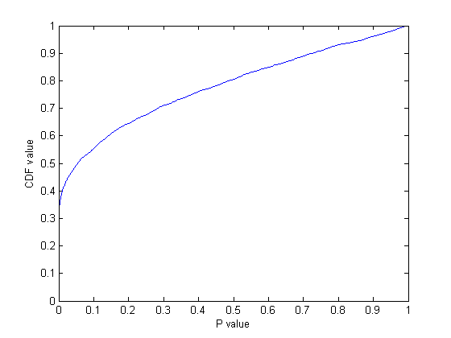
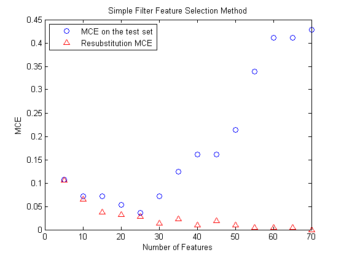
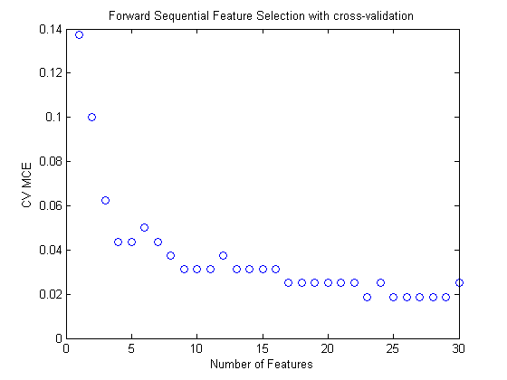

Selecting Features for Classifying High-dimensional Data
Reducing the number of features (dimensionality) is important in statistical learning. For many data sets with a large number of features and a limited number of observations, such as bioinformatics data, usually many features are not useful for producing a desired learning result and the limited observations may lead the learning algorithm to overfit to the noise. Reducing features can also save storage and computation time and increase comprehensibility.
There are two main approaches to reducing features: feature selection and feature transformation. Feature selection algorithms select a subset of features from the original feature set; feature transformation methods transform data from the original high-dimensional feature space to a new space with reduced dimensionality.
This demo focuses on feature selection techniques. More specifically, this demo shows how to use the functions in the Statistics Toolbox™ to perform sequential feature selection, which is one of the most popular feature selection algorithms. It also shows how to use holdout and cross-validation to evaluate the performance of the selected features.
Contents
Loading the Data
Serum proteomic pattern diagnostics can be used to differentiate observations from patients with and without disease. Profile patterns are generated using surface-enhanced laser desorption and ionization (SELDI) protein mass spectrometry. These features are ion intensity levels at specific mass/charge values.
The data in this demo is from the FDA-NCI Clinical Proteomics Program Databank. This demo uses the high-resolution ovarian cancer data set that was generated using the WCX2 protein array. After some pre-processing steps, similar to those shown in the Bioinformatics Toolbox™ demo Pre-processing Raw Mass Spectrometry Data, the data set has two variables obs and grp. The obs variable consists 216 observations with 4000 features. Each element in grp defines the group to which the corresponding row of obs belongs.
load ovariancancer;
whos
Name Size Bytes Class Attributes grp 216x1 26784 cell obs 216x4000 3456000 single
Dividing Data Into a Training Set and a Test Set
Some of the functions used in this demo call MATLAB® built-in random number generation functions. To duplicate the exact results shown in this demo, execute the command below to set the random number generators to a known state. Otherwise, your results may differ.
rand('twister',0);
The performance on the training data (resubstitution performance) is not a good estimate for a model's performance on an independent test set. Resubstitution performance will usually be over-optimistic. To predict the performance of a selected model, you need to assess its performance on another data set that was not used to build the model. Here, we use cvpartition to divide data into a training set of size 160 and a test set of size of size 56. Both the training set and the test set have roughly the same group proportions as in grp. We select features using the training data and judge the performance of the selected features on the test data. This is often called holdout validation. Another simple and widely-used method for evaluating and selecting a model is cross-validation, which will be illustrated later in this demo.
holdoutCVP = cvpartition(grp,'holdout',56)
holdoutCVP =
Hold-out cross validation partition
N: 216
NumTestSets: 1
TrainSize: 160
TestSize: 56
dataTrain = obs(holdoutCVP.training,:); grpTrain = grp(holdoutCVP.training);
The Problem of Classifying Data Using All the Features
Without first reducing the number of features, some classification algorithms would fail on the data set used in this demo, since the number of features is much larger than the number of observations. In this demo, we use Quadratic Discriminant Analysis (QDA) as the classification algorithm. If we apply QDA on the data using all the features, as shown in the following, we will get an error because there are not enough samples in each group to estimate a covariance matrix.
try yhat = classify(obs(holdoutCVP.test(),:), dataTrain, grpTrain,'quadratic'); catch ME display(ME.message); end
The covariance matrix of each group in TRAINING must be positive definite.
Selecting Features Using a Simple Filter Approach
Our goal is to reduce the dimension of the data by finding a small set of important features which can give good classification performance. Feature selection algorithms can be roughly grouped into two categories: filter methods and wrapper methods. Filter methods rely on general characteristics of the data to evaluate and to select the feature subsets without involving the chosen learning algorithm (QDA in this demo). Wrapper methods use the performance of the chosen learning algorithm to evaluate each candidate feature subset. Wrapper methods search for features better fit for the chosen learning algorithm, but they can be significantly slower than filter methods if the learning algorithm takes a long time to run. The concepts of "filters" and "wrappers" are described in John G. Kohavi R. (1997) "Wrappers for feature subset selection", Artificial Intelligence, Vol.97, No.1-2, pp.272-324. This demo shows one example of a filter method and one example of a wrapper method.
Filters are usually used as a pre-processing step since they are simple and fast. A widely-used filter method for bioinformatics data is to apply a univariate criterion separately on each feature, assuming that there is no interaction between features.
For example, we might apply the t-test on each feature and compare p-value (or the absolute values of t-statistics) for each feature as a measure of how effective it is at separating groups.
dataTrainG1 = dataTrain(grp2idx(grpTrain)==1,:);
dataTrainG2 = dataTrain(grp2idx(grpTrain)==2,:);
[h,p,ci,stat] = ttest2(dataTrainG1,dataTrainG2,[],[],'unequal');
In order to get a general idea of how well-separated the two groups are by each feature, we plot the empirical cumulative distribution function (CDF) of the p-values:
ecdf(p); xlabel('P value'); ylabel('CDF value')
There are about 35% of features having p-values close to zero and 50% of features having p-values smaller than 0.05, meaning there about 2000 features among the original 4000 features that have strong discrimination power. One can sort these features according to their p-values (or the absolute values of the t-statistic) and select some features from the sorted list. However, it is usually difficult to decide how many features are needed unless one has some domain knowledge or the maximum number of features that can be considered has been dictated in advance based on outside constraints.
One quick way to decide the number of needed features is to plot the MCE (misclassification error, i.e., the number of misclassified observations divided by the number of observations) on the test set as a function of the number of features. Since there are only 160 observations in the training set, the largest number of features for applying QDA is limited, otherwise, there may not be enough samples in each group to estimate a covariance matrix. Actually, for the data used in this demo, the holdout partition and the sizes of two groups dictate that the largest allowable number of features for applying QDA is about 70. Now we compute MCE for various numbers of features between 5 and 70 and show the plot of MCE as a function of the number of features. In order to reasonably estimate the performance of the selected model, it is important to use the 160 training samples to fit the QDA model and compute the MCE on the 56 test observations (blue circular marks in the following plot). To illustrate why resubstitution error is not a good error estimate of the test error, we also show the resubstitution MCE using red triangular marks.
[ignore,featureIdxSortbyP]= sort(p,2); %sort the features testMCE =zeros(1,14); resubMCE = zeros(1,14); nfs = 5:5:70; classf = @(xtrain,ytrain,xtest,ytest) ... sum(~strcmp(ytest,classify(xtest,xtrain,ytrain,'quadratic'))); resubCVP = cvpartition(length(grp),'resubstitution') for i=1:14 fs = featureIdxSortbyP(1:nfs(i)); testMCE(i) = crossval(classf,obs(:,fs),grp,'partition',holdoutCVP)... /holdoutCVP.TestSize; resubMCE(i) = crossval(classf,obs(:,fs),grp,'partition',resubCVP)/... resubCVP.TestSize; end plot(nfs, testMCE,'o',nfs,resubMCE,'r^'); xlabel('Number of Features'); ylabel('MCE'); legend({'MCE on the test set' 'Resubstitution MCE'},'location','NW'); title('Simple Filter Feature Selection Method');
resubCVP =
Resubstitution (no partition of data)
N: 216
NumTestSets: 1
TrainSize: 216
TestSize: 216
 For convenience, classf is defined as an anonymous function. It fits QDA on the given training set and returns the number of misclassified samples for the given test set. If you were developing your own classification algorithm, you might want to put it in a separate file, as follows:
% function err = classf(xtrain,ytrain,xtest,ytest) % yfit = classify(xtest,xtrain,ytrain,'quadratic'); % err = sum(~strcmp(ytest,yfit));
The resubstitution MCE is over-optimistic. It consistently decrease when more features are used and drops to zero when more than 60 features are used. However, if the test error increases while the resubstitution error still decreases, then overfitting may have occurred. This simple filter feature selection method gets the smallest MCE on the test set when 20 features are used. The plot shows overfitting occurs when more than 20 features are used. The smallest MCE on the test set is about 10%:
testMCE(4)
ans =
0.0536
The features that achieve 10% MCE are the first 20 features in the sorted list:
featureIdxSortbyP(1:20)
ans =
Columns 1 through 6
2814 2897 2813 2650 2642 2645
Columns 7 through 12
2644 2338 2643 2730 2337 2398
Columns 13 through 18
2399 2731 2898 2452 2651 2637
Columns 19 through 20
2636 2638
Applying Sequential Feature Selection
The above feature selection algorithm does not consider interaction between features; besides, features selected from the list based on their individual ranking may also contain redundant information, so that not all the features are needed. For example, the linear correlation coefficient between the first selected feature (column 301) and the second selected feature (column 302) is 0.965.
corrcoef(dataTrain(:,301),dataTrain(:,302))
ans =
1.0000 0.9650
0.9650 1.0000
This kind of simple feature selection procedure is usually used as a pre-processing step since it is fast. More advanced feature selection algorithms improve the performance. Sequential feature selection is one of the most widely used techniques. It selects a subset of features by sequentially adding (forward search) or removing (backward search) until certain stopping conditions are satisfied.
In this demo, we use forward sequential feature selection in a wrapper fashion to find important features. More specifically, since the typical goal of classification is to minimize the MCE, the feature selection procedure performs a sequential search using the MCE of the learning algorithm QDA on each candidate feature subset as the performance indicator for that subset. The training set is used to select the features and to fit the QDA model, and the test set is used to evaluate the performance of the finally selected feature. During the feature selection procedure, to evaluate and to compare the performance of the each candidate feature subset, we apply stratified 10-fold cross-validation to the training set. We will illustrate later why applying cross-validation to the training set is important.
First we generate a stratified 10-fold partition for the training set:
tenfoldCVP = cvpartition(grpTrain,'kfold',10)
tenfoldCVP =
K-fold cross validation partition
N: 160
NumTestSets: 10
TrainSize: 144 144 144 144 144 144 144 144 144 144
TestSize: 16 16 16 16 16 16 16 16 16 16
Then we use the filter results from the previous section as a pre-processing step to select features. For example, we select 150 features here:
fs1 = featureIdxSortbyP(1:150);
We apply forward sequential feature selection on these 150 features. The function sequentialfs provides a simple way (the default option) to decide how many features are needed. It stops when the first local minimum of the cross-validation MCE is found.
fsLocal = sequentialfs(classf,dataTrain(:,fs1),grpTrain,'cv',tenfoldCVP);
The selected features are the following:
fs1(fsLocal)
ans =
2814 2731 2646 2659
To evaluate the performance of the selected model with three features, we compute the MCE on the 56 test samples.
testMCELocal = crossval(classf,obs(:,fs1(fsLocal)),grp,'partition',... holdoutCVP)/holdoutCVP.TestSize
testMCELocal =
0.0536
With only three features being selected, the MCE is comparable to the smallest MCE using the simple filter feature selection method.
The algorithm may have stopped prematurely. Sometimes a smaller MCE is achievable by looking for the minimum of the cross-validation MCE over a reasonable range of number of features. For example, we draw the plot of the cross-validation MCE as a function of the number of features for up to 30 features.
[fsCVfor30,historyCV] = sequentialfs(classf,dataTrain(:,fs1),grpTrain,... 'cv',tenfoldCVP,'Nf',30); plot(historyCV.Crit,'o'); xlabel('Number of Features'); ylabel('CV MCE'); title('Forward Sequential Feature Selection with cross-validation');
The cross-validation MCE reaches the minimum value when 9 features are used and this curve stays flat over the range from 9 features to 27 features (except for a slight increase when 22 features are used). Also the curve goes up when more than 28 features are used, which means overfitting occurs there.
It is usually preferable to have fewer features, so here we pick 9 features:
fsCVfor9 = fs1(historyCV.In(9,:))
fsCVfor9 =
Columns 1 through 6
2814 2897 2813 2644 2731 2646
Columns 7 through 9
2317 2655 2659
To show these 9 features in the order in which they are selected in the sequential forward procedure, we found the row in which they first become true in the historyCV output:
[orderlist,ignore] = find( [historyCV.In(1,:); diff(historyCV.In(1:9,:) )]'); fs1(orderlist)
ans =
Columns 1 through 6
2814 2659 2731 2646 2317 2897
Columns 7 through 9
2655 2813 2644
To evaluate these 9 features, we compute their MCE for QDA on the test set. We get the smallest MCE value so far:
testMCECVfor9 = crossval(classf,obs(:,fsCVfor9),grp,'partition',... holdoutCVP)/holdoutCVP.TestSize
testMCECVfor9 =
0.0714
It is interesting to look at the plot of resubstitution MCE values on the training set (i.e., without performing cross-validation during the feature selection procedure) as a function of the number of features:
[fsResubfor30,historyResub] = sequentialfs(classf,dataTrain(:,fs1),... grpTrain,'cv','resubstitution','Nf',30); plot(1:30, historyCV.Crit,'bo',1:30, historyResub.Crit,'r^'); xlabel('Number of Features'); ylabel('MCE'); legend({'10-fold CV MCE' 'Resubstitution MCE'},'location','NE');

Again, the resubstitution MCE values are over-optimistic here. They are smaller than the cross-validation MCE values, and the MCE goes to zero when 22 features are used. We can compute the MCE value of these 22 features on the test set to see the performance of these 22 features:
fsResubfor22 = fs1(historyResub.In(22,:)); testMCEResubfor22 = crossval(classf,obs(:,fsResubfor22),grp,'partition',... holdoutCVP)/holdoutCVP.TestSize
testMCEResubfor22 =
0.0893
testMCEResubfor22, the performance of these 22 features (chosen by resubstitution during the feature selection procedure) on the test set, is larger than testMCECVfor9, the performance of the 9 features (chosen by 10-fold cross-validation during the feature selection procedure) on the test set. It again indicates that the resubstitution error generally is not a good performance estimate for evaluating and selecting features. We may want to avoid using resubstitution error, not only during the final evaluation step, but also during the feature selection procedure.